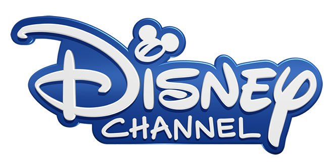

A estas alturas, no falta quien todavía piense que vivimos la edad de oro de la televisión. Sin embargo, dependiendo de con quién hables y qué edad tengas, el consenso es que hemos tenido dos o hasta cinco edades de oro. El teatro en vivo de los cincuenta quizá representa la primera. La década de los ochenta, cuando se estrenaron un alud de series innovadoras como Luz de luna, Los Simpson, Miami Vice y Hill Street blues, sin duda marcó una segunda edad de oro. El periodo de ocho años después del estreno de Los Soprano probablemente dio origen a otra, y creo que estamos presenciando una más, empezando con el debut de Mad men en 2007: Breaking bad llegó un año después, seguida por Louie, American horror story, Hannibal, Homeland y muchas otras.
Hay principalmente dos factores detrás de la actual revolución televisiva. El primero es la televisión por cable, que al financiar entretenimiento rompió todas las reglas durante la década de los noventa. El otro factor, relacionado con el primero, obedece a la ristra de ambiciosos escritores y directores del mundo de la televisión abierta y el cine comercial, quienes al enterarse de este súbito interés en el arte, en el que los canales les permitirían tener licencia creativa, decidieron subirse al barco. Eso fue lo que nos entregó gran parte del magnífico contenido televisivo que disfrutamos durante la época de Los Soprano. Aunque, para ser honesto, quizás empezó antes, con series como The Larry Sanders show, de hbo –una de las mejores y más innovadoras comedias de la historia– y Policías de Nueva York, un intento por parte de un canal abierto, ABC, para crear un programa policiaco con el tono áspero que la televisión por cable permitía.
Si quieres ver televisión a la carta aquí te dejamos unos links:
